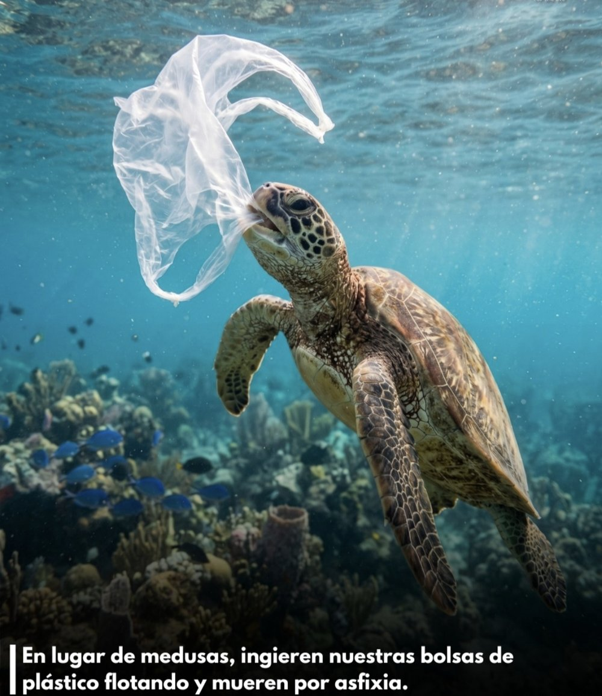
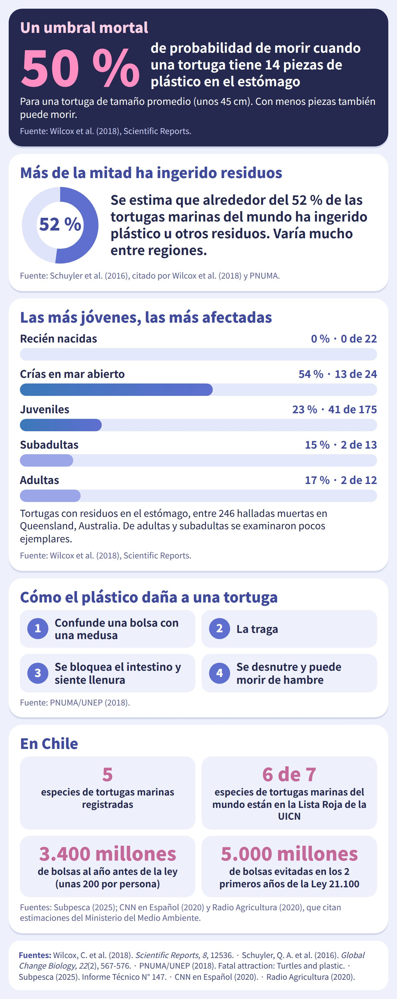
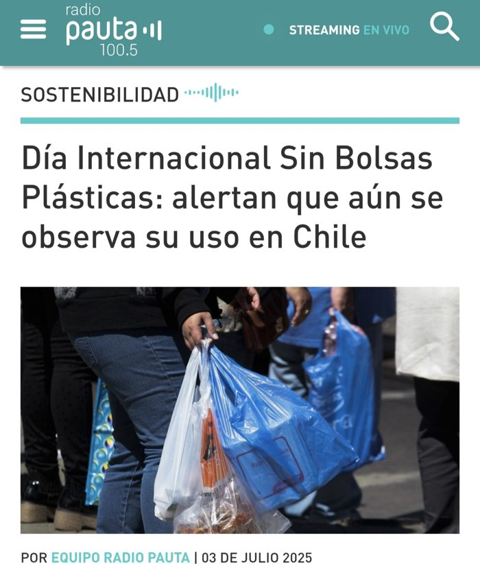

✦ Problemática
El impacto de las bolsas plásticas en las tortugas marinas de Chile. Las bolsas que llegan al mar se parecen a las medusas y las tortugas las confunden con su alimento. Al tragarlas pueden sufrir bloqueos en el intestino, desnutrición y morir.
✦ Introducción
Esta página es parte de la Feria Científica de Ciencias para la Ciudadanía (4° Medio). Aquí podrás entender el problema, ver un vídeo, jugar y reflexionar sobre qué podemos hacer como personas y como sociedad.

✦ Acceso a las secciones
✦ Conociendo el problema
Las bolsas plásticas son residuos de un solo uso hechos con plástico derivado del petróleo. Las autoridades estiman que una bolsa puede tardar hasta 400 años en degradarse y, en el mar, se rompe en pedazos cada vez más pequeños (microplásticos). Para una tortuga, una bolsa que flota se parece a una medusa, y al tragarla puede bloquearle el intestino.
- Humanas: uso y descarte masivo de bolsas desechables (antes de la ley, unas 200 por persona al año en Chile) y mala disposición de los residuos.
- Económicas: eran baratas y de fácil acceso en el comercio.
- Sociales: hábitos de consumo y poco conocimiento sobre cómo reutilizar y reciclar.
- Industriales: producción masiva de plásticos de un solo uso y de envases difíciles de reciclar.
- Naturales: el viento, los ríos y las corrientes marinas arrastran y acumulan los residuos. No los crean, pero los llevan al mar.
En el océano Pacífico y en la costa chilena. En Chile se registran cinco especies de tortugas marinas: laúd, verde, cabezona, olivácea y, en Rapa Nui, carey. No anidan en nuestras playas, pero la Corriente de Humboldt les ofrece alimento, y llegan sobre todo ejemplares juveniles y subadultos.
A las tortugas marinas, que están protegidas y son muy vulnerables, y a otros animales marinos. También a los ecosistemas, donde las tortugas ayudan a controlar medusas y a mantener los pastos marinos, y a las personas que dependen de un mar sano.
✦ La evidencia
Se estima que alrededor del 52 % de las tortugas marinas del mundo ha ingerido plástico u otros residuos.

- Las tortugas jóvenes, en su etapa oceánica, son las de mayor riesgo, y la tortuga olivácea es la especie más expuesta.
- De los residuos que ingieren las tortugas, el plástico es el más común.
- En Chile se documentó el caso de una tortuga verde adulta hallada en Constitución y rehabilitada en Parque Safari Chile por haber ingerido plástico.
- Antes de la Ley 21.100 se usaban unos 3.400 millones de bolsas plásticas al año en Chile, unas 200 por persona. Según una estimación del Ministerio del Medio Ambiente, en los dos primeros años de la ley se evitó el consumo de unos 5.000 millones.
- En La Puntilla (Arica) se estimó una agregación de 514 tortugas verdes, pero la comunidad local percibe que los avistamientos han disminuido.
Dónde se han registrado tortugas marinas en Chile
- Arica y Tarapacá (18° S)Primeros registros. Aquí son más frecuentes, en aguas de 18,3 a 23,8 °C.
- Centro de ChilePresentes como áreas de alimentación y tránsito.
- Magallanes (53° S)Límite sur de los registros. Suelen ser ejemplares en mal estado.
✦ ¿Por qué debería importarnos?
- Una bolsa tragada puede bloquear el intestino y causar la muerte.
- Las tortugas pueden sentirse llenas y morir de hambre.
- Seis de las siete especies de tortugas marinas del mundo están en la Lista Roja de la UICN.
- Sin tortugas se altera el equilibrio de medusas y pastos marinos.
- Más residuos en playas y costas.
- Las comunidades costeras pierden espacios limpios y especies de su entorno.
- Posibles efectos en el turismo y en la pesca.
- Limpiar costas y rescatar y rehabilitar fauna marina tiene costos.
- Los microplásticos podrían entrar a la cadena alimentaria.
- Sus efectos en la salud humana todavía se siguen estudiando.
✦ Vídeo de concientización
Aquí irá el vídeo de 2 a 3 minutos.
Guárdalo como media/video-concientizacion.mp4
✦ Guía a la tortuga
Lleva su comida natural hacia ella y clasifica la basura en el contenedor correcto antes de que se acabe el tiempo.
✦ ¿Qué se está haciendo actualmente?
La Ley 21.100 (2018) prohíbe entregar bolsas plásticas de comercio y rige para todo el comercio desde 2020; quien no la cumple recibe multas. El Ministerio del Medio Ambiente debe impulsar educación ambiental, y Sernapesca coordina el rescate de fauna marina.
Centros de rehabilitación de las universidades San Sebastián, Católica del Norte y de Antofagasta, y de Parque Safari Chile, recuperan tortugas rescatadas por Sernapesca.
En Arica, la ONG TortuArica vigila el estado de las tortugas, y desde 2014 La Puntilla de Chinchorro es una zona de protección para ellas.
El Pacto Chileno de los Plásticos, liderado desde 2019 por Fundación Chile y el Ministerio del Medio Ambiente, reúne a empresas como Coca-Cola, Nestlé y Unilever, que se comprometieron a eliminar envases problemáticos y a diseñar todos sus envases para que sean reciclables, reutilizables o compostables. LATAM Cargo también ha ayudado a trasladar tortugas rescatadas.
✦ ¿Qué podemos hacer?
- Usar bolsas reutilizables.
- Reutilizar las bolsas que ya tenemos.
- Separar y reciclar los residuos.
- Hacer campañas y limpiezas de playa.
- Instalar puntos de reciclaje.
- Conversar y compartir lo aprendido.
- Fiscalizar que la ley se cumpla.
- Regular otros plásticos de un solo uso y el fin de vida de las bolsas.
- Responsabilidad de quienes producen los envases.
Las acciones individuales ayudan, pero no bastan: este problema también tiene dimensiones políticas, económicas, industriales e institucionales.
¿Hasta qué punto nuestras decisiones individuales contribuyen a este problema y dónde comienza la responsabilidad de las empresas, las instituciones y el Estado?
✦ Fuentes y referencias
Leyes y organismos oficiales
- Ley 21.100, que prohíbe la entrega de bolsas plásticas de comercio en todo el territorio nacional (2018). Biblioteca del Congreso Nacional de Chile. bcn.cl
- Ministerio del Medio Ambiente (2024). Oficio N° 242592 sobre la aplicación de la Ley 21.100. mma.gob.cl
- Subsecretaría de Pesca y Acuicultura (2025). Informe Técnico (R. PESQ.) N° 147: Renovación de veda extractiva de mamíferos marinos, tortugas marinas y pingüinos. Valparaíso. subpesca.cl
- Servicio Nacional de Pesca y Acuicultura (Sernapesca): registro de varamientos y rescate de fauna marina. sernapesca.cl
Investigación científica y organismos internacionales
- Schuyler, Q., Hardesty, B. D., Wilcox, C. y Townsend, K. (2014). Global analysis of anthropogenic debris ingestion by sea turtles. Conservation Biology, 28(1), 129-139. pmc.ncbi.nlm.nih.gov
- Wilcox, C., Puckridge, M., Schuyler, Q. A., Townsend, K. y Hardesty, B. D. (2018). A quantitative analysis linking sea turtle mortality and plastic debris ingestion. Scientific Reports, 8, 12536. pmc.ncbi.nlm.nih.gov
- Schuyler, Q. A. y colaboradores (2016). Risk analysis reveals global hotspots for marine debris ingestion by sea turtles. Global Change Biology, 22(2), 567-576. pubmed.ncbi.nlm.nih.gov
- Rehabilitación de un ejemplar de Tortuga verde del Pacífico (Chelonia mydas) por ingesta de plástico y posterior trauma en vida silvestre. Parque Safari Chile y Universidad de O’Higgins. cerac.unlpam.edu.ar
- Effectiveness of Marine Wildlife Rescue and Rehabilitation Centers in Chile in relation to strandings of sea turtles, penguins, sea lions, and sea otters (2022). Revista de Biología Marina y Oceanografía, 57(3). rhv.uv.cl
- Programa de las Naciones Unidas para el Medio Ambiente (PNUMA/UNEP). Fatal attraction: Turtles and plastic. unep.org
Organizaciones, prensa y otros
- Fundación Chile (2019). The Ministry of the Environment announces concrete commitment from various companies to reduce the impact of plastics. fch.cl
- CNN en Español (2020). Empieza la prohibición total de bolsas plásticas en Chile. cnnespanol.cnn.com
- Radio Agricultura (2020). Desde el próximo lunes: Pymes, almacenes y ferias libres tampoco podrán dar bolsas plásticas. radioagricultura.cl
- Radio Agricultura (2022). Tortuga verde será trasladada a Antofagasta para continuar con su recuperación. radioagricultura.cl
- Emol (2017). Preocupante hallazgo de tortugas decapitadas en zona protegida de Arica. emol.com
- El Mostrador (2025). Ley «Chao Bolsas Plásticas» cumple 7 años. elmostrador.cl
- Pauta (2025). Día Internacional sin Bolsas Plásticas: alertan que aún se observa su uso en Chile. pauta.cl
- Fotografía de portada:
